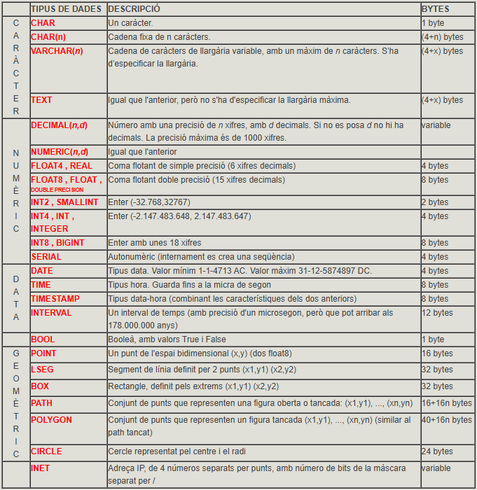
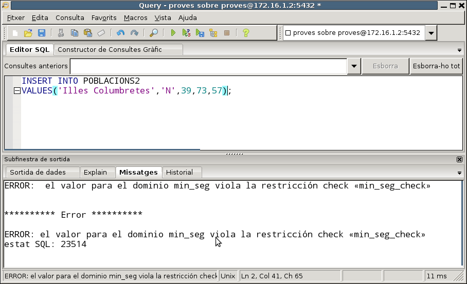

2. DDL
DDL(Data Definition Language) o Llenguatge de Definició de Dades és el conjunt de sentències que ens permeten definir, retocar o esborrar l'estructura de la Base de Dades. I com que l'estructura bàsica d'una Base de Dades Relacional és la taula, ens dedicarem bàsicament a estudiar les sentències que ens permeten definir les taules (o modificar-les o esborrar- les), amb totes les restriccions que hem vist en el Model Relacional: clau principal, claus externes, camps no nuls, ... També veurem altres objectes que podrem definir, sobretot vistes , que es corresponen a l'esquema extern que vam veure en el Tema 1, és a dir, la visió particular que pot tenir un usuari.
Seran 3 sentències les que veurem:
-
CREATE , que permet crear un objecte nou.
-
DROP , que permet esborrar un objecte ja existent.
-
ALTER , que permet modificar un objecte ja existent.
En el moment de crear una taula definirem tots els seus camps, amb les restriccions pertinents a cadascun d'ells. Cada camp haurà de ser d'un tipus de dades. En cada SGBD hi ha uns tipus de dades particulars, encara que els més bàsics són similars, i en ells serà on incidirem més.
2.1 Tipus de dades
En el moment de definir un camp haurem d'especificar obligatòriament de quin tipus serà. Ja es van veure els tipus bàsics d'Access en el tutorial del tema 5. Ara els veurem els tipus bàsics de PostgreSQL , i veurem que hi haurà molts tipus similars (com en tots els SGBD).
En el següent quadre es resumeixen els tipus de dades més importants de PostgreSQL. És un conjunt molt extens, que fins i tot pot ampliar l'usuari amb la instrucció CREATE TYPE , com veurem al final del tema. Són especialment interessants els tipus geomètrics (amb POINT , BOX ,...) i el INET (adreça IP).

També disposarem d'un tipus enumerat. El veurem en l'última pregunta del tema.
En la documentació de PostgreSQL trobarem tots els tipus possibles:
2.2 CREATE TABLE
Permet crear una nova taula. Obligatòriament s'hauran d'especificar els camps i els tipus de dades de cada camp. Òbviament, una vegada creada la taula estarà buida, sense cap fila.
Sintaxi
CREATE TABLE taula
( camp1 tipus [(grandària)] [DEFAULT valor] [restricció11] [restricció12] [...]
[, camp2 tipus [(grandària)] [DEFAULT valor] [restricció21] [restricció22][...]
[, ...]]
[, restricciómultiple1 [, ...]] )
Podem observar que la definició de l'estructura de la taula va entre parèntesis, separant per comes la definició de cada camp.
-
El nom de la taula no ha de ser el de cap altre objecte anterior (taula o vista). Si volem posar un nom amb més d'una paraula o amb una paraula reservada, l'haurem de posar entre cometes dobles; però no us ho aconselle, és preferible la utilització del guió baix, i així només és una paraula.
-
En cada camp posarem el seu nom i el tipus. Si el tipus de dades és VARCHAR, podrem posar opcionalment la grandària màxima (si no la posem serà de 255 en el cas de text). Si el tipus de dades és NUMERIC, podrem posar opcionalment la grandària (número de xifres significatives) i número de xifres de la part fraccionària.
-
Podem posar ocionalment un valor per defecte amb la clàusula DEFAULT. D'aquesta manera, en introduir una nova fila en la taula, si no li posem valor a aquest camp, agafarà el valor per defecte. En el valor es pot posar una constant del tipus del camp, o una expressió amb funcions, sempre que torne una dada dels tipus del camp.
-
Podem posar opcionalment restriccions a cada camp. Hauran d'anar abans de la coma que separa del següent camp. També poden haver restriccions que afecten a més d'un camp, que preferiblement posarem al final de la definició de la taula. Veurem les restriccions en el següent punt.
Exemples
Si voleu practicar aquestos exemples, feu-lo sobre la Base de Dades proves (usuari proves , contrasenya proves). Si us dóna error perquè la taula que aneu a crear ja està creada la taula, esborreu-la primer, i torneu a executar la sentència.
1) Crear una nova taula anomenada EMPLEAT1 amb dos camps, un anomenat dni de tipus text i llargària 10 i un altre anomenat nom** amb llargària 50.
CREATE TABLE EMPLEAT1 (dni VARCHAR (10) , nom VARCHAR (50));
2) Crear una taula anomenada EMPLEAT2 amb un camp text de 10 caràcters anomenat dni ; un altre camp de tipus text de llargària predeterminada (255) anomenat nom; un altre camp anomenat data_naixement de tipus data; un altre anomenat sou de tipus numèric, amb 6 xifres significatives, de les quals 2 ha de ser de la part fraccionària i un últim anomenat departament de tipus numèric menudet (INT2 o SMALLINT).
CREATE TABLE EMPLEAT2
( dni VARCHAR(10) ,
nom VARCHAR ,
data_naixement DATE ,
sou NUMERIC(6,2) ,
departament INT2 )
3) Crear una taula anomenada EMPLEAT3 com el de l'exemple anterior, però amb dos camps més al final: un camp anomenat poblacio de tipus text de 50 caràcters, i amb el valor per defecte Castelló i un últim anomenat data_incorporacio de tipus data i valor per defecte la data d'avui
CREATE TABLE EMPLEAT3
( dni VARCHAR(10) ,
nom VARCHAR ,
data_naixement DATE ,
sou NUMERIC(6,2) ,
departament INT2 ,
poblacio VARCHAR(50) DEFAULT 'Castelló' ,
data_incorporacio DATE DEFAULT CURRENT_DATE )
 Exercicis
Exercicis
Al llarg d'aquesta tercera part, en el conjunt d'exercicis de DDL, crearem
tota l'estructura de la Base de Dades FACTURA , però per a no interferir
cadascú amb els altres companys, cadascú es connectarà a la seua Base de Dades
factura_local.
L'esquema Entitat-Relació i l'esquema relacional que implementarem serà el
següent:

En la Base de Dades anomenada factura_local:
Ex_1 - Creeu la taula CATEGORIA , amb els mateixos camps i del mateix tipus que en la taula CATEGORIA de FACTURA , però de moment sense clau principal ni cap altra restricció.
Ex_2 - Creeu la taula ARTICLE , també sense restriccions.
Nota
Durant tots aquestos exercicis de DDL pot ser molt convenient tenir obertes les dues connexions: la de FACTURA (per anar consultant) i la de factura_local (per anar creant i modificant).
2.2.1 Restriccions (Constraint)
Per mig de les restriccions podrem definir dins d'una taula restriccions d'usuari com són la definició de la clau principal, claus externes, camps no nuls i camps únics.
Hi ha dues maneres de definir restriccions: les que afecten a un únic camp (i que es posen en la mateixa definició del camp) i les que afecten o poden afectar a més d'un camp, que s'han de definir separadament de la definició dels camps. Comencem per les primeres, per ser més senzilles d'entendre:
2.2.1.1 Restriccions de camp únic
Són restriccions que es posen en la mateixa definició del camp i només afectaran a aquest camp: van per tant després del tipus de dades del camp i abans de la coma de separació dels camps.
Sintaxi
[ CONSTRAINT nom ] {PRIMARY KEY | UNIQUE | NOT NULL | REFERENCES taula2 [(camp1)] | CHECK (_condició_)}
Si no posem nom a la restricció (CONSTRAINT nom) PostgreSQL li assignarà automàticament un nom. Açò pot resultar còmode en ocasions, per a no haver d'inventar-nos noms per a les restriccions, però després ens limitaria a que no podríem retocar aquestes restriccions.
Els tipus de restriccions que podem definir són:
Restricció de clau principal
- PRIMARY KEY : el camp serà clau principal.
Per exemple, d'aquesta manera definirem la taula EMPLEAT3 (com la de l'apartat anterior) amb el camp dni com a clau principal. Recordeu que l'heu d'esborrar primer (potser no l'estigueu visualitzant, però sí que està creada; refresqueu constantment les taules per saber la situació actual)
CREATE TABLE EMPLEAT3
( dni VARCHAR(10) CONSTRAINT cp_emp3 PRIMARY KEY,
nom VARCHAR ,
data_naixement DATE ,
sou NUMERIC(6,2) ,
departament INT2 ,
poblacio VARCHAR(50) DEFAULT 'Castelló' ,
data_incorporacio DATE DEFAULT CURRENT_DATE )
Nota
Podeu comprovar que, si no poseu nom a la restrició, és a dir, si poseu directament dni TEXT(10) PRIMARY KEY, i aneu al disseny de la taula, PostgreSQL posa automàticament un nom a la restricció format pel nom de la taula seguit de _pkey.
Tingueu en compte també que si la taula ja existia donarà un error. Només heu d'esborrar-la primer.
Restricció d'unicitat
- UNIQUE : el camp serà únic, és a dir, no es podrà agafar dues vegades el mateix valor en aquest camp (Indexat sense duplicats en Access). PostgreSQL generarà automàticament un índex per a aquest camp. Veurem què és un índex en la pregunta 6.
Per exemple, d'aquesta manera definiríem la taula EMPLEAT3 amb la restricció que el camp nom no es pot repetir (si voleu provar la sentència feu-lo en la BD proves , i si ja existeix l'esborreu primer):
CREATE TABLE EMPLEAT3
( dni VARCHAR(10) ,
nom VARCHAR CONSTRAINT u_nom UNIQUE,
data_naixement DATE ,
sou NUMERIC(6,2) ,
departament INT2 ,
poblacio VARCHAR(50) DEFAULT 'Castelló' ,
data_incorporacio DATE DEFAULT CURRENT_DATE )
Restricció de valor no nul
- NOT NULL : el camp no podrà agafar un valor nul (Requerido en Access). Hem de ser conscients que no val la pena definir com a no nula la clau principal, ja que per definició ja ho és.
Per exemple, d'aquesta manera definirem que el camp nom ha de ser no nul.
CREATE TABLE EMPLEAT3
( dni VARCHAR(10) ,
nom VARCHAR CONSTRAINT nn_nom NOT NULL ,
data_naixement DATE ,
sou NUMERIC(6,2) ,
departament INT2 ,
poblacio VARCHAR(50) DEFAULT 'Castelló' ,
data_incorporacio DATE DEFAULT CURRENT_DATE )
Restricció d'integritat referencial
- REFERENCES : servirà per a definir que aquest camp és una clau externa. Haurem d'especificar obligatòriament la taula a la qual apunta, i opcionalment podem posar entre parèntesis el camp de la taula al qual apunta, encara que si no ho posem, per defecte apuntarà a la clau principal (i nosaltres sempre voldrem apuntar a la clau principal).
Per exemple, d'aquesta manera podem definir la clau externa que apunta a la taula DEPARTAMENT (i que indica que l'empleat pertany al departament). Abans de crear aquesta versió de EMPLEAT3, hem de tenir creada la taula DEPARTAMENT, sinó donarà error:
CREATE TABLE DEPARTAMENT
( num_d INT2 CONSTRAINT cp_dep PRIMARY KEY ,
nom_d VARCHAR(50) ,
director VARCHAR(10) ,
data DATE );
CREATE TABLE EMPLEAT3
( dni VARCHAR(10) ,
nom VARCHAR ,
data_naixement DATE ,
sou NUMERIC(6,2) ,
departament INT2 CONSTRAINT ce_emp3_dep REFERENCES DEPARTAMENT ,
poblacio VARCHAR(50) DEFAULT 'Castelló' ,
data_incorporacio DATE DEFAULT CURRENT_DATE );
Com ja es va veure en el tema del Model Relacional (restriccions d'integritat referencial), hi ha 3 maneres d'actuar quan s'esborra o es modifica una fila de la taula principal que té associades files en la taula relacionada per mig de la clau externa. Per exemple, què fem amb els familiars d'un empleat si esborrem l'empleat? Aquestes maneres d'actuar s'han d'especificar en el moment de definir la clau externa. La manera de posar-les en SQL i el significat són les següents:
NO ACTION : no es deixarà esborrar o modificar de la taula principal si en té alguna fila relacionada. És l'opció per defecte. Així en l'exemple d'EMPLEAT3, amb una clau externa que apunta a DEPARTAMENT, si intentem esborrar o modificar el numero d'un departament que té empleats, ens donarà un missatge d'error, avisant que com té registres relacionats en una altra taula no es pot esborrar o modificar.
CASCADE : s'esborraran (o modificaran) en cascada els registres relacionats de la taula on està la clau externa. S'especificarà amb ON DELETE CASCADE o ON UPDATE CASCADE.
CREATE TABLE EMPLEAT3
( dni VARCHAR(10) ,
nom VARCHAR ,
data_naixement DATE ,
sou NUMERIC(6,2) ,
departament INT2 CONSTRAINT ce_emp3_dep REFERENCES DEPARTAMENT ON DELETE
CASCADE ON UPDATE CASCADE ,
poblacio VARCHAR(50) DEFAULT 'Castelló' ,
data_incorporacio DATE DEFAULT CURRENT_DATE )
D'aquesta manera si esborrem un departament de la taula DEPARTAMENT, s'esborraran també els empleats de la taula EMPLEATS3 d'aquest departament. I si en la taula DEPARTAMENT modifiquem un número de departament, per exemple de 5 a 50, aquest valor serà el nou valor en el camp departament de la taula EMPLEAT3 per a aquells que abans teníen un 5.
- SET NULL : posarà a nul el camp que és clau externa dels registres que estiguen relacionats amb l'esborrat o modificat de la taula principal. Així, si férem la següent definició de la taula EMPLEAT3
CREATE TABLE EMPLEAT3
( dni VARCHAR(10) ,
nom VARCHAR ,
data_naixement DATE ,
sou NUMERIC(6,2) ,
departament INT2 CONSTRAINT ce_emp3_dep REFERENCES DEPARTAMENT ON DELETE
SET NULL ,
poblacio VARCHAR(50) DEFAULT 'Castelló' ,
data_incorporacio DATE DEFAULT CURRENT_DATE )
en el cas que esborrem el departament 5, no donaria cap error per aquesta restricció d'integritat, i posaria a nul el departament d'aquells empleats que abans eren del departament 5.
- SET DEFAULT: Estableix les columnes que referencien als seus valors per defecte. Ha d'existir una fila en la taula referenicada que coincidixca amb els valors per defecte, si no són NULL, o l'opració fallarà.
Restricció externa
- CHECK : farà una comprovació per a validar els valors introduïts per a aquest camp. La condició de validació ha d'anar entre parèntesis, i ha de ser una expressió, normalment de comparació del camp en qüestió amb algun valor.
Per exemple, anem a exigir que el sou siga estrictament positiu (per tipus de dades numèric, podria agafar el valor 0 o valors negatius)
CREATE TABLE EMPLEAT3
( dni VARCHAR(10) ,
nom VARCHAR ,
data_naixement DATE ,
sou NUMERIC(6,2) CONSTRAINT sou_positiu CHECK (sou > 0),
departament INT2 ,
poblacio VARCHAR(50) DEFAULT 'Castelló' ,
data_incorporacio DATE DEFAULT CURRENT_DATE )
Evidentment es pot posar més d'una restricció en la definició d'una taula. En aquest exemple arrepleguem totes les anteriors, és a dir, definim la taula EMPLEAT3 amb tots els seus camps, i definint la clau principal (dni), amb el camp nom únic , amb el sou estrictament positiu, i amb el camp departament que serà clau externa que apunta a la taula DEPARTAMENT. Per complicar-lo un poc més també exigirem que el camp nom siga no nul, i així veure que es pot posar més d'una restricció en un camp.
CREATE TABLE EMPLEAT3
( dni VARCHAR(10) CONSTRAINT cp_emp3 PRIMARY KEY ,
nom VARCHAR CONSTRAINT u_nom UNIQUE CONSTRAINT nn_nom NOT NULL ,
data_naixement DATE ,
sou NUMERIC(6,2) CONSTRAINT sou_positiu CHECK (sou > 0) ,
departament INT2 CONSTRAINT ce_emp3_dep REFERENCES DEPARTAMENT ,
poblacio VARCHAR(50) DEFAULT 'Castelló' ,
data_incorporacio DATE DEFAULT CURRENT_DATE )
Observeu que com a qüestió d'estil s'han posat noms a les restriccions que d'alguna manera suggereixen el motiu de la restricció. Així, cp_emp3 vol dir clau princpal de EMPLEAT3 , u_nom vol dir que el camp nom és únic , nn_nom vol dir que nom és no nul , nn_sou vol dir que sou és no nul , i ce_emp3_dep vol dir clau externa de la taula EMPLEAT3 a la taula DEPARTAMENT. Si tenim un criteri clar per als noms de les restriccions, si després les volem desactivar temporalment o senzillament esborrar-les, ho podrem fer des de SQL.
2.2.1.2 Restriccions de camp múltiple
També s'anomenen restriccions de taula, en contraposició a les anteriors, que són restriccions de camp. Són restriccions que van dins de la definició d'una taula però fora de la definició d'un camp, i que poden afectar a un o més d'un camp. S'haurà de definir expressament a quin o quins camps afecten.
Sintaxi
[ CONSTRAINT nom ] {PRIMARY KEY | UNIQUE | FOREIGN KEY | CHECK (_condicio_)} (c11 [,c12][,...])
[ REFERENCES taula2 [ (c21 [,c22][,...]) ] ]
[ ON DELETE {CASCADE | SET NULL}] [ON UPDATE {CASCADE | SET NULL}] ]
Igual que abans, si no posem nom a la restricció (CONSTRAINT nom) PostgreSQL li n'assignarà un automàticament, que serà construït de manera molt lògica.
Observeu que ara sempre especifiquem el o els camps afectats.
Els tipus de restriccions són els mateixos que en el cas anterior, però la sintaxi variarà lleugerament:
Restricció de clau principal
- PRIMARY KEY : posarem entre parèntesis el camp o camps (en aquest cas separats per comes) que seran clau principal.
Per exemple, definim una altra vegada el camp dni com a clau principal de la taula EMPLEAT3
CREATE TABLE EMPLEAT3
( dni VARCHAR(10) ,
nom VARCHAR ,
data_naixement DATE ,
sou NUMERIC(6,2) ,
departament INT2 ,
poblacio VARCHAR(50) DEFAULT 'Castelló' ,
data_incorporacio DATE DEFAULT CURRENT_DATE ,
CONSTRAINT cp_emp3 PRIMARY KEY (dni) )
I ara un altre per a definir la clau principal de FAMILIAR. Com la clau està formada per 2 camps, estem obligats a utilitzar una restricció de camp múltiple.
CREATE TABLE FAMILIAR
( dni VARCHAR(10),
nom VARCHAR,
data_n DATE,
parentesc VARCHAR(50),
CONSTRAINT cp_fam2 PRIMARY KEY (dni,nom) )
Com comentàvem, si la clau principal està formada per 2 camps estarem obligats a utilitzar una restricció de camp múltiple. Un error prou comú seria el següent:
CREATE TABLE FAMILIAR2
( dni VARCHAR(10) PRIMARY KEY,
nom VARCHAR PRIMARY KEY,
data_n DATE,
parentesc VARCHAR(50) )
Podeu comprovar que donarà error , perquè estem intentant definir 2 claus principals. La clau principal és única, això sí formada per 2 camps en aquesta ocasió.
Restricció d'unicitat
- UNIQUE : ara posarem entre parèntesis el o els camps que seran únics (en el seu conjunt). PostgreSQL generarà automàticament un índex per a aquesta combinació de camps. Veurem què és un índex en la pregunta 6.
Per exemple, modifiquem la definició de EMPLEAT3 (anomenant-la EMPLEAT4) , amb un camp per als cognoms i un camp per al nom. Definirem la restricció que els camps cognoms i nom (en conjunt) no es poden repetir.
CREATE TABLE EMPLEAT4
( dni VARCHAR(10),
cognoms VARCHAR,
nom VARCHAR,
data_naixement DATE,
sou NUMERIC(6,2) ,
departament INT2 ,
CONSTRAINT u_nom4 UNIQUE (cognoms,nom) )
Restricció de valor no nul
- NOT NULL.
No existeix aquesta opció com a restricció múltiple. Per tant s'ha de definir sempre com a restricció de camp únic.
Restricció d'integritat referencial
- FOREIGN KEY : servirà per a definir que aquest o aquestos camps són una clau externa. És la que més varia en la seua sintaxi, ja que hem d'especificar tant el o els camps d'aquesta taula que són clau externa, com la taula a la qual apunta (i en tot cas el o els camps on s'apunta, encara que si no ho posem apuntarà a la clau principal de l'altra taula, cosa que voldrem sempre):
[CONSTRAINT nom] FOREIGN KEY (c11 [,c12][,...]) REFERENCES taula2 [(c21 [,c22][,...])] [ON DELETE {CASCADE | SET NULL}] [ON UPDATE {CASCADE | SET NULL}]
En l'exemple de la clau externa que apunta a la taula DEPARTAMENT quedarà així:
CREATE TABLE EMPLEAT3
( dni VARCHAR(10) ,
nom VARCHAR ,
data_naixement DATE ,
sou NUMERIC(6,2) ,
departament INT2 ,
poblacio VARCHAR(50) DEFAULT 'Castelló' ,
data_incorporacio DATE DEFAULT CURRENT_DATE ,
CONSTRAINT ce_emp3_dep FOREIGN KEY (departament) REFERENCES DEPARTAMENT )
Restricció externa
- CHECK : ara la condició de validació podrà afectar a més d'un camp
Per exemple podríem exigir que la data d'incorporació siga estrictament posterior a la data de naixement
CREATE TABLE EMPLEAT3
( dni VARCHAR(10) ,
nom VARCHAR ,
data_naixement DATE ,
sou NUMERIC(6,2) ,
departament INT2 ,
poblacio VARCHAR(50) DEFAULT 'Castelló' ,
data_incorporacio DATE DEFAULT CURRENT_DATE ,
CONSTRAINT check_dates CHECK (data_incorporacio > data_naixement) )
O una altra una miqueta més real, anem a agafar empleats de més de 18 anys, i per tant anem a exigir que la data d'incorporació siga més de 18 anys posterior a la data de naixement. Per a això utilitzem la funció AGE(f1,f2) que calcula el temps entre la data d2 i la data d1 (que ha de ser la posterior), i d'ahí extraurem els anys amb EXTRACT(year FROM ...)
CREATE TABLE EMPLEAT3
( dni VARCHAR(10) ,
nom VARCHAR ,
data_naixement DATE ,
sou NUMERIC(6,2) ,
departament INT2 ,
poblacio VARCHAR(50) DEFAULT 'Castelló' ,
data_incorporacio DATE DEFAULT CURRENT_DATE ,
CONSTRAINT check_dates
CHECK (EXTRACT(year FROM AGE(data_incorporacio,data_naixement) ) >=18 ) )
Evidentment, es poden barrejar les restriccions de camp únic i les de camp múltiple. Ací en tenim un exemple on s'arrepleguen moltes (no totes) les restriccions anteriors. Hem posat de camp múltiple la dels 18 anys dels empleats, perquè no hi ha un altre remei, i també la de no repetició del camp nom , encara que podia ser de camp únic:
CREATE TABLE EMPLEAT3
( dni VARCHAR(10) CONSTRAINT cp_emp3 PRIMARY KEY ,
nom VARCHAR CONSTRAINT nn_nom NOT NULL ,
data_naixement DATE ,
sou NUMERIC(6,2) CONSTRAINT sou_positiu CHECK (sou > 0) ,
departament INT2 CONSTRAINT ce_emp3_dep REFERENCES DEPARTAMENT ,
poblacio VARCHAR(50) DEFAULT 'Castelló' ,
data_incorporacio DATE DEFAULT CURRENT_DATE ,
CONSTRAINT u_nom3 UNIQUE (nom) ,
CONSTRAINT check_dates
CHECK (EXTRACT(year FROM AGE(data_incorporacio,data_naixement) ) >=18 ) )
Exercicis
En factura_local:
Ex_3 - Crear la taula PROVINCIA , amb la clau principal.
Ex_4 - Crear la taula POBLE , amb la clau principal i la restricció que el camp cod_pro és clau externa que apunta a PROVINCIA.
Ex_5 - Crear la taula VENEDOR , amb la clau principal i la clau externa a POBLE (de moment no definim la clau externa a VENEDOR, que és reflexiva).
Ex_6 - Crear la taula CLIENT , amb la clau principal i la clau externa a POBLE
Ex_7 - Crear la taula FACTURA , amb la clau principal i les claus externes a CLIENT i VENEDOR. També heu d'exigir que cod_cli siga no nul.
Ex_8 - Crear la taula LINIA_FAC , amb la clau principal (observa que està formada per 2 camps) però de moment sense la clau externa que apunta a ARTICLE. A més cod_a ha de ser no nul.
2.3 ALTER TABLE
Permet modificar l'estructura d'una taula ja existent, bé afegint, llevant o modificant camps (columnes), bé afegint o llevant restriccions. També servirà per a canviar el nom d'un camp i fins i tot canviar el nom de la taula
Sintaxi
Per a alterar l'estructura d'algun camp o restricció utilitzarem aquesta sintaxi:
ALTER TABLE taula
{ADD | DROP | ALTER} {COLUMN camp | CONSTRAINT restricció múltiple}
Per a canviar el nom d'un camp:
ALTER TABLE taula
RENAME [COLUMN] camp TO nou_nom_camp
Per a canviar el nom de la taula:
ALTER TABLE taula
RENAME TO nou_nom_taula
Afegir camp o restricció
Si volem afegir una columna o una restricció, l'haurem de definir totalment.
-
En el cas d'un camp, haurem d'especificar el nom, el tipus i opcionalment una restricció que afecte només al camp. Per exemple, aquesta sentència afegeix el camp supervisor (de tipus text de 10) a la taula EMPLEAT3. Observeu que en la definició del camp poden entrar restriccions de camp únic.
ALTER TABLE EMPLEAT3 ADD COLUMN supervisor VARCHAR(10) -
En el cas d'una restricció, aquesta serà del tipus de restricció múltiple, amb la sintaxi que vam veure en l'apartat de restriccions. Per exemple, aquesta sentència afegeix la clau externa reflexiva (de EMPLEAT3 a EMPLEAT3) que indica els supervisors. El dni hauria de ser la clau principal de EMPLEAT3
ALTER TABLE EMPLEAT3 ADD CONSTRAINT ce_emp3_emp3 FOREIGN KEY (supervisor) REFERENCES EMPLEAT3 (dni)
Modificar un camp
Podem fer dues coses: modificar el tipus del camp o modificar el valor per defecte (posar valor per defecte o llevar-lo)
Per a canviar el tipus haurem d'utilitzar la sintaxi... ALTER COLUMN camp TYPE nou_tipus **. Per exemple anem a fer que el camp poblacio siga de 25 caràcters
ALTER TABLE EMPLEAT3
ALTER COLUMN poblacio TYPE VARCHAR(25)
Canviar el tipus de dades és automàtic quan els tipus són compatibles entre ells. Si no ho són ens donarà error, però segurament ho podrem esquivar amb la clàusulaUSING , que ens permet posar a continuació el camp i aprofitem per a posar un operador de conversió de tipus (::) amb aquesta sintaxi:
ALTER TABLE _TAULA_
ALTER COLUMN _camp_ TYPE _tipus_nou_ USING _camp_ ::_tipus_nou_
Per a canviar el valor per defecte utilitzarem la sintaxi: **... ALTER COLUMN camp {SET | DROP} DEFAULT [expressió] **
ALTER TABLE EMPLEAT3
ALTER COLUMN poblacio DROP DEFAULT
Esborrar camp o restricció
Si volem llevar un camp o una restricció és suficient amb especificar el nom del camp o de la restricció (per això pot ser molt interessant donar nom a les restriccions). En el primer exemple llevem la clau externa del supervisor. En la segona llevem el camp supervisor.
ALTER TABLE EMPLEAT3
DROP CONSTRAINT ce_emp3_emp3;
ALTER TABLE EMPLEAT3
DROP COLUMN supervisor
Renomenar un camp
Per exemple renomenem el camp data_incorporacio a data_inc :
ALTER TABLE EMPLEAT3
RENAME COLUMN data_incorporacio TO data_inc
Renomenar la taula
Ara li posarem el nom EMP3 a la taula EMPLEAT3
ALTER TABLE EMPLEAT3
RENAME TO EMP3
Exemples
1) Modificar la taula EMP3 per afegir el camp cp (codi postal) de tipus text de 5 caràcters.
ALTER TABLE EMP3 ADD COLUMN cp VARCHAR(5);
2) Modificar la taula EMP3 per modificar el camp anterior i que siga de tipus numèric.
ALTER TABLE EMP3 ALTER COLUMN cp TYPE NUMERIC(5) USING CP::NUMERIC;
3) Modificar la taula EMP3 per afegir la restricció (encara que siga un poc estranya) que no es pot repetir la combinació codi postal i població.
ALTER TABLE EMP3 ADD CONSTRAINT u_cp_pobl UNIQUE (cp,poblacio);
4) Modificar la taula EMP3 per esborrar la restricció anterior
ALTER TABLE EMP3 DROP CONSTRAINT u_cp_pobl;
5) Modificar la taula EMP3 per modificar el nom del camp cp a codi_postal
ALTER TABLE EMP3 RENAME COLUMN cp TO codi_postal;
6) Renomenar la taula EMP3 a EMPLEAT3
ALTER TABLE EMP3 RENAME TO EMPLEAT3;
Exercicis
En factura_local:
Ex_9 - Afegir un camp a la taula VENEDOR anomenat alies de tipus text, que ha de ser no nul i únic.
Ex_10 - Esborrar el camp anterior, alies , de la taula VENEDOR.
Ex_11 - Afegir la clau principal de CATEGORIA.
Ex_12 - En la taula ARTICLE afegir la clau principal i la clau externa a CATEGORIA.
Ex_13 - En la taula LINIA_FAC afegir la clau externa que apunta a FACTURA, exigint que s'esborre en cascada (si s'esborra una factura, s'esborraran automàticament les seues línies de factura). I també la clau externa que apunta a ARTICLE (aquesta normal, és a dir NO ACTION)
Nota
Per a no fer-lo massa llarg s'han deixat de definir alguna restricció, concretament la reflexiva de VENEDOR a VENEDOR (que marca el cap)
2.4 DROP TABLE
Ens servirà per esborrar absolutament una taula, tant les dades com l'estructura. S'ha d'anar amb compte amb ella, perquè és una operació que no es pot desfer, i per tant potencialment molt perillosa.
Sintaxi
DROP TABLE taula
Exemples
DROP TABLE FAMILIAR
2.5 Índex
Els índex són estructures de dades que permeten mantenir ordenada una taula respecte a un o més d'un camp, cadascun d'ells de forma ascendent o descendent.
Tenir un índex per un determinat camp o camps permet reduir dràsticament el temps utilitzat en ordenar per ells (perquè ja es manté aquest ordre) i també quan es busca un determinat valor d'aquest camp, ja que com està ordenat es poden fer recerques binàries o dicotòmiques. Quan no està ordenat no hi ha més remei que fer una recerca seqüencial, que és considerablement més lenta.
De tota manera no s'ha d'abusar dels índex, ja que és una estructura addicional de dades que ocuparà espai, i que com s'han de mantenir els índex constantment actualitzats, cada vegada que es realitza una operació d'actualització (inserció, modificació o esborrat) s'ha de reestructurar l'índex, per a posar o llevar l'element al seu lloc.
Creació d'índex
A banda de la creació explícita d'índex que farem en aquesta pregunta, PostgreSQL crea implícitament un índex cada vegada que:
- Creem una clau princpal
- Creem una restricció d'unicitat (UNIQUE)
En ambdós casos serà un índex que no es podrà repetir. Per tant, en els casos anteriors no cal crear un índex, perquè PostgreSQL ja ho ha fet automàticament.
En PostgreSQL la creació d'índex és molt completa. Anem a veure una versió resumida:
Sintaxi
CREATE [UNIQUE] INDEX nom_índex
ON taula (c1 [ASC|DESC][, c2 [ASC|DESC], ...] [NULLS { FIRST | LAST }] )
Si posem l'opció UNIQUE impedirà que es repetisquen els valors del camp (o camps) que formen l'índex, de forma similar a la restricció UNIQUE del CONSTRAINT.
L'opció d'ordenació per defecte és l'ascendent.
Podem fer que els nuls estiguen al principi de tot o al final de tot, segons ens convinga:
-
FIRST : farà que en l'ordenació, els valors nuls vagen abans de qualsevol altre valor. Aquesta és l'opció per defecte, si l'ordre és descendent, a més de crear l'índex fa que siga clau principal. Evidentment no ha d'haver una clau principal creada amb anterioritat.
-
LAST : els valors nuls estaran al final de tot, després de qualsevol altre valor. És l'opció per defecte quan l'ordre és ascendent.
Exemples
1) Crear un índex en la taula EMPLEAT4 per al camp departament en ordre ascendent .
CREATE INDEX i_dep ON EMPLEAT4 (departament);
2) Crear un index per al camp data_naixement(descendent) i sou(ascendent) en la taula EMPLEAT4. En els dos casos, data_naixement i sou , s'han d'ordenar els valors nuls al final
CREATE INDEX i_dat_sou ON EMPLEAT4 (data_naixement DESC NULLS LAST, sou NULLS
LAST);
Esborrar un índex
La sentència d'esborrar un índex és molt senzilla. Només hem d'especificar el nom de l'índex i la taula on està definit.
DROP INDEX nom_índex ON taula
Exercicis
En factura_local:
Ex_14 - Afegir un índex anomenat i_nom_cli a la taula CLIENT pel camp nom.
Ex_15 - Afegir un índex anomenat i_adr_ven a la taula VENEDOR per a que estiga ordenat per cp (ascendent) i adreca (descendent).
2.6 Vistes
Les vistes, també anomenades esquemes externs, consisteixen en visions particulars de la B.D. Es correspon al nivell extern de l'arquitectura a tres nivells. Les taules, que són les que realment contenen les dades i donen la visió global de la B.D., corresponen al nivell conceptual.
Creació d'una vista
Sintaxi
CREATE VIEW _nom_vista_
AS _subconsulta_
[WITH READ ONLY];
on se li dóna un nom, és el resultat d'una subconsulta (un SELECT), i tenim la possibilitat d'impedir la modificació de les dades.
Per exemple, una vista amb les comarques, el número de poblacions de cada comarca, el total d'habitats i l'altura mitjana:
CREATE OR REPLACE VIEW ESTADISTICA AS
SELECT nom_c, count(nom) AS num_p,sum(poblacio) AS pobl, avg(altura) AS alt_mitjana
FROM POBLACIONS
GROUP BY nom_c
ORDER BY nom_c;
Nota
Si voleu provar aquesta vista, ho podeu fer en la Base de Dades geo , ja que en ella tenim dades per a la consulta que proporciona les dades a la vista. Recordeu que ens estem connectant tots com el mateix usuari, per tant si algú ha creat un objecte (en aquest cas una vista) no es podrà utilitzar aquest nom per a crear un altre objecte. Per això és convenient que si feu una prova de crear un objecte, després esborreu aquest objecte.
Observeu la sintaxi CREATE OR REPLACE, que va molt bé per a crear, i si ja existeix per a substituir. Com que estem accedint tots com el mateix usuari, serà prou normal que l'objecte ja existesca per haver-lo creat un company. D'aquesta manera el substituirem. No passa res per esborrar un objecte ja existent, ja que tot açò són proves.
La manera d'utilitzar-la és com una taula normal, però ja sabem, que en realitat les dades estan en les taules.
SELECT *
FROM ESTADISTICA;
I fins i tot es pot jugar amb taules i vistes. En aquesta sentència traurem la província, nom de la comarca, número de pobles i altura mitjana de les comarques amb 5 o menys pobles:
SELECT provincia,COMARQUES.nom_c,num_p,alt_mitjana
FROM COMARQUES , ESTADISTICA
WHERE COMARQUES.nom_c=ESTADISTICA.nom_c and num_p <= 5;
Esborrar una vista
Per a esborrar una vista
DROP VIEW _nom_vista_
Per exemple, per a esborrar la vista anterior:a esborrar una vista
DROP VIEW ESTADISTICA;
Exercicis
En factura_local:
Ex_16 - Crear la vista RESUM_FACTURA , que ens dóne el total dels diners de la factura, el total després del descompte d'articles, i el total després del descompte de la factura, tal i com teníem en la consulta Ex_56. A partir d'aquest moment podrem utilitzar la vista per a traure aquestos resultats
Ex 17 - Crear la vista RESUM_VENEDOR, on aparega informació del nom del venedor, del nombre total d'articles venuts i de l'import total facturat.
Ex 18 - Crear la vista RESUM_CATEGORIAS, on aparega informació del nom de la categoria, del nombre total d'articles venuts i de l'import total facturat.
2.7. Creació d'altres objectes: seqüències, dominis i tipus.
Una de les característiques de PostgreSQL és la seua gran versatilitat.
En concret es poden crear molts objectes. A banda dels habituals, vistes, seqüències,... es poden xcrear més tipus d'objectes. En aquest curs donarem una ulladeta als dominis i la definició de nous tipus de dades.
Hem de tenir en consideració que tots ens connectarem com el mateix usuari per a fer proves. Per tant els objectes que creem poden fastidiar a altres companys si utilitzem tots els mateixos noms.
En altres SGBD (com per exemple Oracle) existeix la possibilitat de crear els objectes posant CREATE OR REPLACE ..., que si no existeix el crea, i si existeix el substitueix. Lamentablement en PostgreSQL depén de la versió: en les més modernes sí que es pot, però en versions anteriors no podrem, excepte en les vistes i les funcions.
2.7.1 Seqüències
Creació d'una seqüència
També es poden crear seqüències (SEQUENCE), que són objectes que agafen valors numèrics que van incrementant-se (com l'autonumèric).
Sintaxi
CREATE SEQUENCE _nom_seqüència_
[START WITH _valor_inicial_]
[INCREMENT BY _valor_increment_] ... ;
La sentència és més llarga, per a considerar més casos. Per a nosaltres està bé així.
Per defecte, el valor inicial és 1, i l'increment també 1.
És un objecte independent de les taules. S'utilitza de la següent manera:
CURRVAL('nom_seqüència') torna el valor actual (ha d'estar inicialitzat)
NEXTVAL('nom_seqüència') incrementa la seqüència i torna el nou valor (excepte la primera vegada que l'inicia amb el valor inicial)
La manera habitual d'utilitzar-lo serà per obtenir un valor que s'afegirà a un camp d'una taula (normalment la clau principal).
Suposem que tenim una taula anomenada FACTURA amb l'estructura que ve a continuació, i volem que la clau principal siga un autonumèric. Ho podem provar sobre la Base de Dades i usuari proves.
CREATE TABLE FACTURA
( num_f NUMERIC(7) CONSTRAINT cp_fact PRIMARY KEY,
data DATE,
client VARCHAR(10));
Primer ens crearem la seqüència:
CREATE SEQUENCE s_num_fac START WITH 2016001;
Després l'utilitzem:
INSERT INTO FACTURA VALUES (NEXTVAL('s_num_fac'), '15-01-2016','cli001');
Si ara mirem el contingut de la taula FACTURA obtindrem:

O fins i tot en el moment de declarar la taula, li posem un valor per defecte al camp, que serà el següent de la seqüència. No haurem d'introduir ara res en la columna num_f , que agafa el valor de la seqüència
CREATE TABLE FACTURA2
( num_f NUMERIC(7) CONSTRAINT cp_fact2 PRIMARY KEY DEFAULT
NEXTVAL('s_num_fac'),
data DATE,
client VARCHAR(10));
INSERT INTO FACTURA2(data,client) VALUES ('15-01-2016','cli001');
Observeu també que en la taula FACTURA2, el valor comença per 2016002 , ja que el primer valor l'havíem utilitzat en FACTURA. Per tant el contingut de la taula FACTURA2 serà:

També ho podríem haver fet declarant la clau de tipus SERIAL , que el que fa és implementar una seqüència, i donar valors successius per al camp on està definida. Però d'aquesta manera la seqüència comença sempre per 1
CREATE TABLE FACTURA3
( num_f SERIAL CONSTRAINT cp_fact3 PRIMARY KEY,
data DATE,
client VARCHAR(10));
I després fer la inserció d'aquesta manera:
INSERT INTO FACTURA3(data,client) VALUES ('15-01-2016','cli001')
Com comentàvem, el valor introduït per la seqüència serà 1 :

Tornarem a veure aquest exemple en les consultes d'actualització, concretament el INSERT.
Esborrar una seqüència
Per a esborrar una seqüència utilitzarem la sentència DROP SEQUENCE :
DROP SEQUENCE s_num_fac
De moment aquesta sentència ens donaria error, ja que la taula FACTURA2 utilitza aquesta seqüència. Esborrarem primer les 3 taules, i després la seqüència per a no interferir amb els companys/es.
DROP TABLE FACTURA, FACTURA2, FACTURA3;
DROP SEQUENCE s_num_fac;
2.7.2 Dominis
Els dominis són els conjunts de valors que pot agafar un determinat camp. Habitualment es posa senzillament un tipus de dades. Però el model relacional teòric és més restrictiu, i els dominis encara podrien ser subconjunts d'aquestos tipus de dades.
Creació d'un domini
Normalment aquestos subconjunts es realitzen per mig dels check , que permeten una regla de validació (una condició) per a donar les dades com a bones (per exemple, un sou sempre és positiu, per tant, a banda de fer que siga numèric podríem obligar a que fóra positiu).
Sintaxi
CREATE DOMAIN nom AS data_tipus
[CHECK(expresió)| NOT NULL | NULL ];
PostgreSQL permet definir dominis, que seran d'un determinat tipus base, d'una grandària determinada (opcional), amb un valor per defecte (opcional) i fins i tot amb una clàusula check. A partir d'aquest moment, un o més d'un camp els podrem definir d'aquest domini (amb l'avantatge que canviant el domini canviem el tipus de tots els camps que el tenen).
Anem a veure alguns exemples que es poden realitzar sobre l'usuari proves.
CREATE DOMAIN sou AS numeric(7,2)
CHECK (VALUE > 0);
Si us dóna error perquè ja existia el domini, senzillament esborreu el domini anterior i ho torneu a provar
Ara podríem definir la taula:
CREATE TABLE EMPLEAT5
( cod_e varchar(5) primary key,
nom_e varchar(50),
salari sou);
Si intentem introduir la dada del sou malament (per exemple posant-lo negatiu) veurem que dóna error.

Un altre exemple, que farem sobre la Base de Dades proves , encara que és un exemple basat en les taules que teníem en geo.
En la taula de POBLACIONS tenim les coordenades (latitud i longitud). Podríem intentar fer uns dominis per a marcar l'hemisferi (N S per a latitud, i E W per a longitud), els graus de latitud (-90º a 90º), graus de longitud (-180º a 180º) en longitud, per als minuts (0' a 59') , segons (0” a 59”). Centrem-nos en la latitud:
CREATE DOMAIN hemi_lat AS char(1)
CHECK (VALUE IN ('N','S'));
CREATE DOMAIN graus_lat AS numeric(2)
CHECK (VALUE BETWEEN 0 AND 90);
CREATE DOMAIN min_seg AS numeric(2)
CHECK (VALUE BETWEEN 0 AND 59);
Ara podríem definir una alternativa a la taula de POBLACIONS:
CREATE TABLE POBLACIONS2
( nom VARCHAR(50) CONSTRAINT cp_pob2 PRIMARY KEY,
lat_h hemi_lat,
lat_g graus_lat,
lat_m min_seg,
lat_s min_seg);
i comprovaríem que les latituds s'han d'introduir correctament. Si posem per exemple els minuts malament, dóna error
INSERT INTO POBLACIONS2
VALUES('Illes Columbretes','N',39,73,57);

Però no hi ha problema si les dades són correctes.
INSERT INTO POBLACIONS2
VALUES('Illes Columbretes','N',39,53,57);

Esborrar un domini
Per a esborrar un domini, utilitzarem DROP DOMAIN.
Sintaxi
DROP DOMAIN [IF EXISTS] nom [CASCADE | RESTRICT]
- RESTRICT rebutja eliminar el domini si hi ha objectes que depenen d'ell. Aquest és el valor predeterminat.
Exemple
DROP DOMAIN sou;
Si algun camp està definit amb el domini que esborrem, donarà error. Si esborràrem amb l'opció CASCADE, s'esborrarien els camps de les taules amb aquest domini. Per a deixar que els companys/es puguen treballar també, esborrem tot el que hem creat:
DROP TABLE EMPLEAT5;
DROP DOMAIN sou;
Encara no esborrem els dominis hemi_lat , graus_lat i min_seg , perquè els utilitzarem en la següent pregunta.
2.7.3 Tipus de dades
Ja havíem comentat que PosgreSQL és molt versàtil, i permet a l'usuari crear tipus de dades personals.
Tres són les maneres de crear un tipus de dades: compost, enumerat i extern.
- Compost és com un registre, on s'especifiquen els camps i els tipus.
- Enumenat : posarem els possibles valors entre parèntesis.
- Extern és molt més complet i complex que permet crear un nou tipus base, amb una estructura interna i amb funcions, normalment creades en C, d'entrada (per a introduir la dada) i eixida (per a representar-la), d'anàlisi, ... Aquest tipus s'escapa dels objectius d'aquest curs
Creació de tipus de data Compost
Sintaxi
Posarem entre parèntesi el nom dels camps i el tipus que formaran part d'aquest tipus compost.
CREATE TYPE nom AS ([nom_camp tipo_camp] [,..])
Exemple
Per exemple, sobre la Base de Dades proves :
CREATE TYPE num_complex AS (a float4, b float4);
que ens serviria per a representar números complexes. Si us dóna error perquè ja existieix el tipus (perquè l'ha creat un company/a), senzillament esborreu- lo abans i ho torneu a provar
Un altre exemple (no cal fer-lo, és il·lustratiu només):
CREATE TYPE lat AS (
h char(1),
g numeric(2,0),
m numeric(2,0),
s numeric(2,0));
per a representar la latitud, encara que podríem aprofitar els dominis creats en el punt anterior, i ens eixirà millor (aquest sí que el podeu fer):
CREATE TYPE lat AS (
h hemi_lat,
g graus_lat,
m min_seg,
s min_seg);
i el tipus lat haurà de respectar les restriccions de cada domini dels quatre camps.
Ara podríem definir una taula
CREATE TABLE POBLACIONS3 (
nom VARCHAR(50) CONSTRAINT cp_pob3 PRIMARY KEY,
latitud lat,
comarca varchar(50));
D'aquesta manera queda molt compacte.
Per exemple, aquesta introducció de dades donarà un error, ja que l'hemisferi no és correcte:
INSERT INTO POBLACIONS3
VALUES ('Castelló','(K,39,59,10)','Plana Alta');
En canvi aquesta funcionarà perfectament:
INSERT INTO POBLACIONS3
VALUES ('Castelló','(N,39,59,10)','Plana Alta');
Per a accedir als camps dels tipus compostos, bé ja definits, bé definits per nosaltres, haurem de posar el nom de la columna seguida d'un punt i seguit del nom del camp. Però en les sentències SQL se'ns presenta un problema: que aquesta sintaxi serveix per a posar també el nom de la taula seguit del nom de la columna.
Així per exemple ens donarà error la següent sentència, en la que volem traure el nom de la població, la latitud i si està en l'hemisferi nord o sud:
SELECT nom, latitud, latitud.h FROM POBLACIONS3;
L'error el dóna perquè en latitud.h espera que latitud siga una taula i h una columna. La manera d'esquivar aquest error és posar entre parèntesis la columna:
SELECT nom, latitud, (latitud).h FROM POBLACIONS3;
En el tema següent, el de programació en PL/pgSQL veurem que allà no caldrà posar els parèntesis, perquè no hi haurà la confusió de taula.columna
Creació de tipus de data Enumerat
El tipus enumerat és un conjunt de dades estàtiques definides en el moment de la creació del tipus, amb un ordre també predefinit. Està disponible des de la versió 8.3 de PostgreSQL.
Sintaxi
CREATE TYPE nom AS ENUM
('element' [,...])
Exemple
CREATE TYPE d_set AS ENUM
('dilluns','dimarts','dimecres','dijous','divendres','dissabte','diumenge');
Posteriorment el podrem utilitzar, per exemple, en la definició d'una taula:
CREATE TABLE HORARI (
cod_pr NUMERIC(5) PRIMARY KEY,
d_tut d_set,
h_tut NUMERIC(4,2));
Ara el podem utilitzar. Haurem de tenir en compte que els valors són únicament els definits. I s'ha de respectar majúscules i minuscules.
INSERT INTO HORARI VALUES (1,'dimarts',10);
En canvi, aquesta donaria error:
INSERT INTO HORARI VALUES (2,'Dimecres',12);
ja que el nom de la setmana comença en majúscula.
Introduïm algunes dades més
INSERT INTO HORARI VALUES (2, 'dimecres',12) , (3,'dilluns',9) ,
(4,'divendres',11);
Podem comprovar com l'ordre predefint és el del moment de la creació del tipus:
SELECT * FROM HORARI ORDER BY d_tut;
I com també es pot comprovar en aquesta sentència:
SELECT * FROM HORARI WHERE d_tut > 'dimarts';
on només eixiran les files corresponents al dimecres i al divendres (files 2 i 4).
Esborrar tipus de dades
Per últim, anem a esborrar els objectes que hem creat, per a no interferir amb els companys:
DROP TABLE POBLACIONS2 , POBLACIONS3 , HORARI ;
DROP TYPE num_complex , lat , d_set ;
DROP DOMAIN hemi_lat , graus_lat , min_seg ;
Exercicis
En factura_local:
Ex 19 - Tenim creada la taula VENEDOR i es desitja que la clau principal siga una seqüència autonumérica personalitzada. Observa la informació actual en la taula VENEDOR de la BD factura i analitza quina seqüència s'ha utilitzat.

- A continuació realitza la inserció d'un registre en aquesta taula tenint en compte la seqüència creada, per a comprovar que funciona.
- Finalment elimina els objectes creats.
- Escriu les sentències en l'ordre adequat
Ex 20 - Volem crear una nova taula CLIENT2 i es vol que la clau principal siga una seqüència personalitzada autonumerica. Observa la informació actual en la taula CLIENT de la BD factura i analitza quina seqüència s'hauria de utilitzat.

- Has de tindre en compte que al crear la taula CLIENT2 perquè el camp cod_cli, per defecte sempre agafe el valor següent de la seqüència definida anteriorment.
- A continuació realitza la inserció d'un registre en aquesta taula tenint en compte els canvis realitzats en la base de dades.
- Finalment elimina els objectes creats. Escriu les sentències en l'ordre adequat.
Ex 21 - En la taula FACTURA2 es vol que la clau principal siga una seqüència autonumérica en sèrie.
- Crea la taula FACTURA2 perquè el camp num_f utilitze una seqüència en sèrie.
- A més has de tindre en compte que el iva de la factura solament pot ser el 10 o el 21 i que el descompte la factura ha de ser inferior a 50.
- A continuació realitza la inserció d'un registre en aquesta taula per a comprovar que funciona.
- Finalment elimina els objectes creats.
- Escriu les sentències en l'ordre adequat.
Ex 22 - Crea la taula ARTICLE2 tenint en compte el següent;
- Comprovar que el preu, stock i stock_min no és negatiu
- Crear un tipus de dades per a l'estat d'un article, que pot prendre els valors "Disponible", "Esgotat" o "En espera".
-
Crea un tipus de dada per a registrar el codi de barres EAN-13 d'un article. Tenint en compte que el codi de barres EAN-13 s'observen 3 parts:
- País de procedència: són els dos o tres primers dígits i, en el cas d'Espanya, aquest prefix és el 84.
- Codi del producte: següents 9 o 10 dígits.
- Dígit de control: és un sol número, l'últim, i serveix per a corroborar que el codi és correcte.
-
Comprovar que stock no pot ser inferior a stock _min (HAS DE DEFINIR UNA CONSTRAINT)
- A continuació realitza la inserció d'un registre en aquesta taula per a comprovar que funciona..
- Finalment elimina els objectes creats.
- Escriu les sentències en l'ordre adequat.
Llicenciat sota la Llicència Creative Commons Reconeixement NoComercial CompartirIgual 3.0